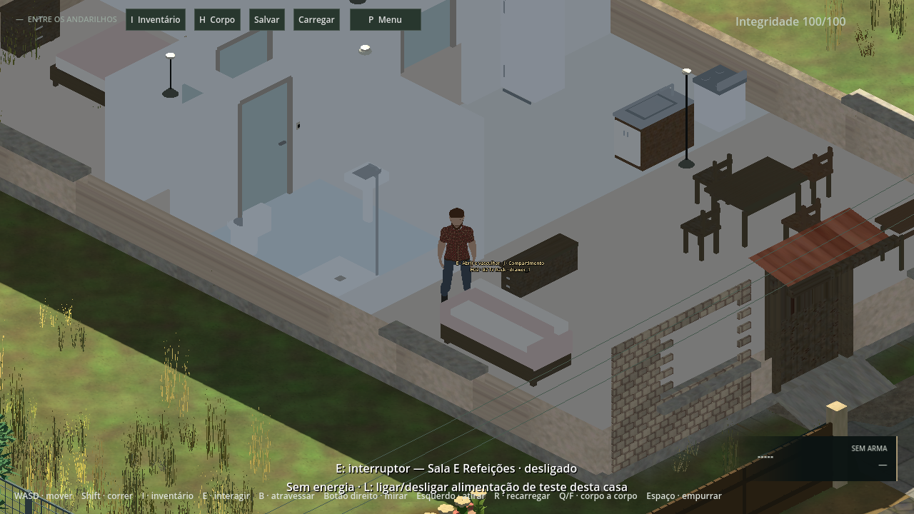
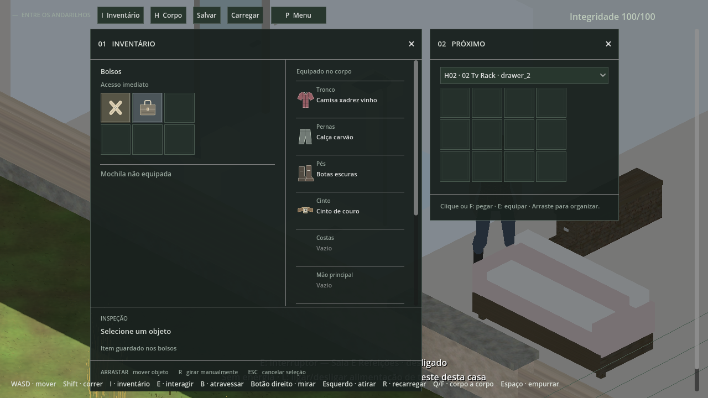
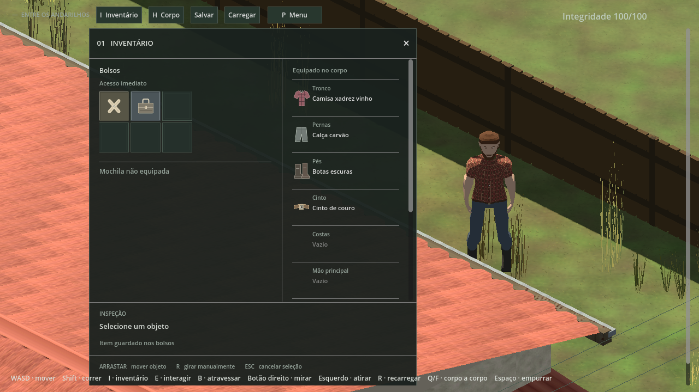

Demo R117 · Arroio revisado com loot
Validação local em 21/11/2026, Godot 4.4.1, renderizador Compatibility. Projeto testado: Demo_Godot_R78/project.godot. A pasta histórica conserva o nome R78; o projeto agora se identifica como R117.
40casas revisadas
590pontos de loot
595peças físicas móveis
26verificações distintas aprovadas
O que mudou na demonstração
A demo completa passa a carregar as plantas ampliadas, as frentes corrigidas dos armários e as posições de móveis verificadas no mapa revisado. Mantém o personagem animado, a câmera isométrica, o modo de mira no ombro, combate, HUD, 480 identidades de zumbis e a progressão social existente.
O loot cobre as residências e os pontos catalogados dos estabelecimentos, lago, cabanas, área rural e prisão. A geração usa a semente e as tabelas da revisão do mapa, com limites por local e raridade. O conteúdo só aparece ao vasculhar um ponto acessível. A busca e seu resultado são gravados na mesma sessão. Recipientes vazios permanecem vazios; reabrir e carregar não geram uma nova rolagem.
O estoque inicial da H01 continua distribuído nos móveis aprovados. As armas deixam de criar os antigos estoques de teste no chão. O filtro visual reservado da oficina pode ser recolhido pela HUD, desaparece do cenário e mantém a retirada após carregar.
Capturas da demonstração

H02: personagem atual dentro da planta revisada. As paredes próximas usam o recorte baixo; paredes ao fundo mantêm a orientação do interior.
HUD aprovada, preservada byte a byte. O item da gaveta já está nos bolsos; a gaveta permanece vazia depois da coleta e da retomada.
Exterior do mapa revisado com o personagem e a interface da demo atual.
Como abrir
Importe Demo_Godot_R78/project.godot no Godot 4.4.1 e pressione F5. O projeto de desenvolvimento equivalente está em Entre_os_Andarilhos/labs/e06_population_playable/project.godot. Em ambos, a cena de entrada continua sendo demo_inventory.tscn.
E: abrir e vasculhar; J: escolher compartimento antes de abrir; I: inventário. Na HUD, clique ou F coleta e E equipa. Fora da HUD, F continua no combate. L permite testar a alimentação elétrica da residência.
Salvamento e migração
A campanha revisada usa user://demo_population_map117.json. A demo procura o perfil anterior demo_population_r98.json quando ainda não há campanha revisada. A importação preserva inventário, itens consumidos, saúde, munição, personagens e população. Os compartimentos da H01 são considerados já gerados na migração, impedindo duplicação do estoque antigo. Posições incompatíveis com as novas plantas são ajustadas para espaço livre. O arquivo anterior permanece intacto.
Foram reposicionadas 29 posições iniciais de zumbis em conflito com a geometria revisada, preservando suas identidades e estados. O novo save inclui os estados de abertura dos móveis em todo o mapa. A gravação espera o término das ações e movimentos das peças.
Verificações executadas
| Personagem animado, armas e câmera no ombro presentes | PASSOU |
| Personagens sociais e população persistente presentes | PASSOU |
| 40 casas usam a revisão espacial | PASSOU |
| 590 pontos de loot registrados no mapa | PASSOU |
| H01 usa a residência revisada do mapa | PASSOU |
| HUD aprovada preservada | PASSOU |
| Armas usam os móveis da casa, sem estoques duplicados do laboratório antigo | PASSOU |
| Posição inicial livre para o personagem | PASSOU |
| Sessão completa valida inventário, corpo, população e progressão | PASSOU |
| Sessão completa é gravada | PASSOU |
| Busca grava o loot e o estado de busca juntos | PASSOU |
| Reabrir recipiente não repõe seu estoque | PASSOU |
| Carregar preserva o loot e a busca | PASSOU |
| Migração do perfil anterior não repõe o estoque da H01 | PASSOU |
| Abertura animada e busca na H02 | PASSOU |
| Coleta pelo comando da HUD aprovada | PASSOU |
| Salvar fora da H01 | PASSOU |
| Carregar fora da H01 | PASSOU |
| Tecla L continua permitindo testar a energia da casa | PASSOU |
| HUD aprovada aparece na captura renderizada | PASSOU |
| Bancada da oficina pode ser vasculhada | PASSOU |
| Filtro da oficina desaparece após ser coletado | PASSOU |
| Retirada do filtro persiste ao salvar e carregar | PASSOU |
| Filtro reservado não é duplicado no loot aleatório | PASSOU |
| Migração carrega a campanha anterior preservando inventário e saúde | PASSOU |
| Campanha migrada grava o formato revisado com loot finito | PASSOU |
A execução gráfica aprovou 24 verificações. A execução complementar de migração aprovou 25, com verificações em comum: 26 testes distintos ao todo.
Resultado nativo final · Resultado da execução gráfica · Log do teste complementar de migração · Log da execução no projeto da demonstração
Limites desta entrega
Os novos itens do catálogo mantêm as funções futuras descritas nos contratos; coletar e guardar não ativa automaticamente cozinhar, reparar ou outros sistemas ainda não implementados. Os usos já existentes da demo, como água, alimento, bandagens e armas, continuam com suas definições originais. Os 67 compartimentos de forno/lavadora sem interior físico permanecem adiados conforme a revisão do mapa.
Os 590 pontos foram registrados; a auditoria física anterior cobre os 348 compartimentos residenciais. Nesta integração, os testes jogáveis de ponta a ponta cobrem H01, H02 e a oficina. Não se afirma que cada ponto do mapa foi testado manualmente com o personagem. A migração foi validada carregando e regravando uma campanha de teste, preservando inventário e saúde e sem repor o estoque da H01. Campanhas pessoais precisam da conferência normal no computador do jogador.
O aviso preexistente sobre importação de shore_depth.png continua no log. A suíte final não apresentou erros de script. Esta atualização modifica a demonstração local e seu laboratório; não publica executável, não envia commits e não altera automaticamente os assets da MAIN.